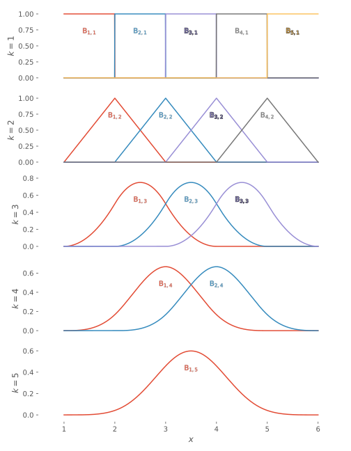
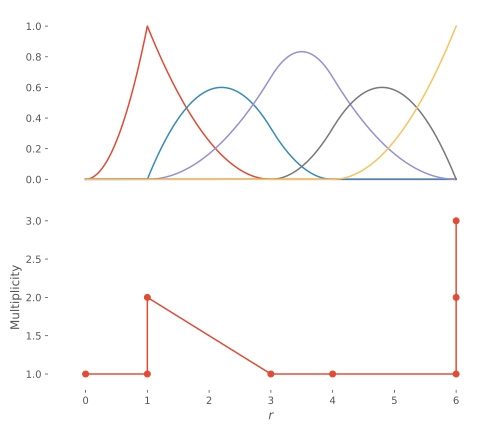
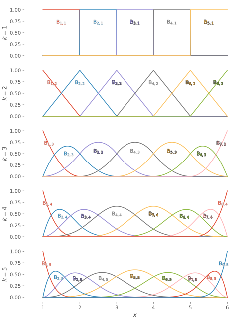
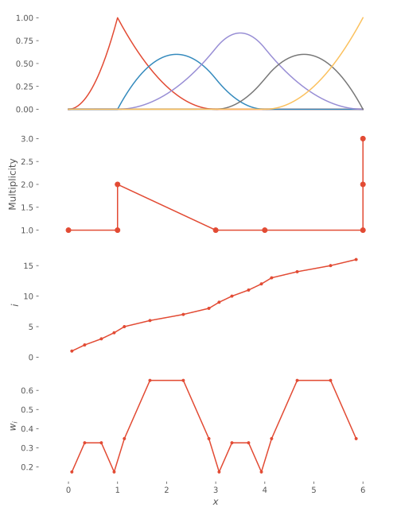

Theory
The underlying equations for the definition and efficient evaluation of B-splines are introduced. Equations labelled (dB.A.ij) refer to equation (ij) in chapter A of
- Carl de Boor (2001). A Practical Guide to Splines. New York: Springer. ISBN: 978-0-387-95366-3.
Definitions
The order of the polynomial is designated $k$, equal to the degree + 1, i.e. a parabolic polynomial is of order 3.
The B-splines can be defined through the Cox–de Boor recursion relation: $\begin{equation} \tag{dB.IX.14} \B{j}{k} \defd \omega_{jk}\B{j}{k-1} + (1-\omega_{j+1,k})\B{j+1}{k-1}, \end{equation}$ where $\begin{equation} \tag{dB.IX.15} \omega_{jk}(x) \defd \frac{x-t_j}{t_{j+k-1}-t_j}, \end{equation}$ and $\begin{equation} \tag{dB.IX.11} \B{r}{1}(x) = \begin{cases} 1, & x\in [t_r,t_{r+1}),\\ 0, & \textrm{else},\\ \end{cases}\quad r\in[1,n_t-1]. \end{equation}$
Given a knot vector $\vec{t}$ of length $n_t$, there are $n_{tk}\defd n_t-k$ functions of order $k$. This implies that there is a highest order $k$ a given knot set vector can support, i.e. $k_{\textrm{max}} = n_t - 1$.
Knot sets
As seen above, the B-splines are completely defined by the knot set vector $\vec{t}$.
The knot set $\vec{t}=\bmat{1&2&3&4&5&6}$ gives rise to the following cardinal splines, of orders $k=1..5$: 
By increasing the multiplicity of some knots, the continuity of the splines can be controlled. E.g. the knot set $\vec{t}=\bmat{0&1&1&3&4&6&6&6}$, will yield the following splines: 
Lastly, it is very common to pad the knot set such that the first and last knot have multiplicity $k$; this simplifies the implementation of boundary conditions when B-splines are used for solving differential equations: 
de Boor's algorithm
An efficient way of evaluating the B-splines is given by de Boor's algorithm. The algorithm described in the Wikipedia article [1] assumes full multiplicity at the endpoints of the knot set, i.e. that the first and last points are repeated $k$ times. In the description of the same algorithm, de Boor additionally assumes a strictly increasing knot set, i.e. $t_{i+1}>t_i$, do avoid any divisions by zero. Since one of the goals for this package is maximum flexibility in choosing the knot set, a derivation of an only slightly more general version of de Boor's algorithm follows.
Given a knot set $\vec{t}$ of length $n_t$, the spline $f(x)$ is given by $\begin{equation} \tag{dB.X.23⅓ \& ⅔} \begin{aligned} f(x) &= \sum_{r=1}^{n_t-k} \alpha_r \B{r}{k}(x)\\ &= \sum_{r=1}^{n_t-k} \alpha_r\frac{x-t_r}{t_{r+k-1}-t_r}\B{r}{k-1}(x)+ \sum_{r=1}^{n_t-k} \alpha_r\frac{t_{r+k}-x}{t_{r+k}-t_{r+1}}\B{r+1}{k-1}(x)\\ &= \sum_{r=1}^{n_t-k} \alpha_r\frac{x-t_r}{t_{r+k-1}-t_r}\B{r}{k-1}(x)+ \sum_{r=2}^{n_t-k+1} \alpha_{r-1}\frac{t_{r+k-1}-x}{t_{r+k-1}-t_{r}}\B{r}{k-1}(x)\\ &= \frac{x-t_1}{t_k-t_1}\alpha_1\B{1}{k-1}(x) + \left[ \sum_{r=2}^{n_t-k} \frac{(x-t_r)\alpha_r+(t_{r+k-1}-x)\alpha_{r-1}}{t_{r+k-1}-t_r}\B{r}{k-1}(x) \right] + \frac{t_{n_t}-x}{t_{n_t}-t_{n_t-k+1}}\alpha_{n_t-k}\B{n_t-k+1}{k-1}(x)\\ &= \sum_{i=1}^{n_t-k+1} \alpha_i^{[2]}(x) \B{i}{k-1}(x), \end{aligned} \end{equation}$ where $\begin{equation} \tag{dB.X.24} \alpha_r^{[2]}(x) \defd \begin{cases} \displaystyle \frac{x-t_1}{t_k-t_1}\alpha_1, & r=1,\\[2ex] \displaystyle \frac{(x-t_r)\alpha_r+(t_{r+k-1}-x)\alpha_{r-1}}{t_{r+k-1}-t_r}, & r\in[2,n_t-k],\\[2ex] \displaystyle \frac{t_{n_t}-x}{t_{n_t}-t_{n_t-k+1}}\alpha_{n_t-k}, & r = n_t - k + 1. \end{cases} \end{equation}$ We have thus reexpressed the spline function $f(x)$ of order $k$ as a linear combination of B-splines of order $k-1$. We can generalize this, to reexpress $f(x)$ as a linear combination of B-splines of order $k-j$, with expansion coefficients $\begin{equation} \label{eqn:dB.X.26} \tag{dB.X.26} \alpha_r^{[j+1]}(x) \defd \begin{cases} \displaystyle \frac{x-t_1}{t_{1+k-j}-t_1}\alpha_1^{[j]}(x), & r=1,\\[2ex] \displaystyle \frac{(x-t_r)\alpha_r^{[j]}(x)+(t_{r+k-j}-x)\alpha_{r-1}^{[j]}(x)}{t_{r+k-j}-t_r}, & r\in[2,n_t-k+j-1],\\[2ex] \displaystyle \frac{t_{n_t}-x}{t_{n_t}-t_{n_t-k+j}}\alpha_{n_t-k+j-1}^{[j]}(x), & r = n_t - k + j. \end{cases} \end{equation}$
The difference between this derivation and those in the Wikipedia article and de Boor (2001), is that we here explicitly consider the limits of the sum imposed by the length of the knot set and the order $k$; this introduces the special cases for $r=1,n_t-k+j$.
An important philosophical difference between the Cox–de Boor recursion relation and de Boor's algorithm, is that whereas the former is a linear combination of basis functions evaluated at certain position $x$, the latter is linear combination of intervals (since the first-order functions $\B{j}{1}$ are non-zero within one interval only, and they are mutual orthogonal), with polynomial expansion coefficients $\alpha_{i}^{[k]}(x)$. To evaluate the spline function $f(x)$, we first find the interval $i$ which contains $x$. Even if the knot set is only non-decreasing, i.e. not strictly increasing, the interval containing $x$ is uniquely defined, since there is only one for which $t_i \leq x < t_{i+1}$; if the knot $t_i$ has a multiplicity higher than unity, the additional intervals cannot contain $x$, since they are empty: $t_{i-1}\leq x < t_i = \varnothing$ if $t_{i-1} = t_i$. By finding the last $i$, for which $t_i \leq x$, we thus guarantee that no divisions by zero will occur.
Integrals
Since the B-splines are piecewise polynomials, they can be exactly integrated using Gauß–Legendre quadrature; an $N$-point quadrature can integrate a polynomial of degree $2N-1$ exactly. We are usually interested in integrals on the form
where $\operator{A}$ is some operator. Assuming that $\operator{A}$ can be approximated by a polynomial of order $k'$, we need an $N$-point quadrature, such that $2N-1\geq 2(k-1)+(k'-1)$, e.g. for $\operator{A}\sim x^2$, we choose $N=\ceil{\frac{2k+1}{2}}=k+1$.
For every non-empty interval generated by the knot set, we setup a Gauß–Legendre quadrature, such that an integral is approximated as
within each interval.
If we again consider the knot set $\vec{t}=\bmat{0&1&1&3&4&6&6&6}$ and allow operators of maximal polynomial order $k'=3$, we get the following distribution quadrature points:

Note that no quadrature points were generated for the intervals $[t_i,t_{i+1})$, $i=2,6,7$, since those intervals are empty. Also note that the quadrature points are interior, i.e. the domain boundaries are not included. That can be useful for dealing with functions which are singular/undefined at the boundaries.
With the quadrature in place, it becomes very easy to compute the overlap matrix:
For the knot set above, we find
from which we see that the individual B-splines $\B{i}{k}$ are non-zero only on the interval $[t_i,t_{i+k})$, except for the last B-spline that is non-zero also at the end of the interval, $[t_i,t_{i+k}]$.
If we want to employ two B-spline sets of different orders, we must make sure they share the same knot set and quadrature points (and that the latter support the combined polynomial order).
Derivatives
A property of B-splines is that the first derivative of a spline is given by
and by extension
where
Comparing with de Boor's algorithm, above, $\eqref{eqn:dB.X.16}$ is very similar in structure to $\eqref{eqn:dB.X.26}$, which means for calculating the $m$th derivative, we can apply $\eqref{eqn:dB.X.16}$ for $j\in[1,m]$, and then switch to $\eqref{eqn:dB.X.26}$ for $j\in[m+1,k-1]$.
Solving equations
For any equation of the form
where $\operator{L}$ is a linear functional, we can solve the equation approximately by expanding $f$ and $g$ in terms of B-splines:
where
The equation is now transformed to
The right-hand side is trivially in the space $\space{P}_{t,k}$, whereas is not necessary true for the left-hand side, i.e. the functional $\operator{L}$ may take $f$ out of the space. We can project the equation into the space $\space{P}_{t,k}$ by left-multiplying by the projector $BB^H$:
where
Since, although the B-splines are non-orthogonal, they are linearly independent, the equation has to hold for any $\ket{\B{i}{k}}$, and we get
If for instance, $g=\lambda f$, we get
which is a generalized eigenvalue problem, which can be solved using e.g. ArnoldiMethod.jl.
If instead we want to calculate a derivative of $f$, i.e. $\operator{L}=\partial^m$, we find the vector of expansion coefficients for $g$ as
where $\mat{D}^{(m)} \defd B^H\partial^mB$, the elements of which are calculated according to Derivatives.
Finally, if we want to solve a boundary-value problem, the solution is given by
- 1NB that the Wikipedia article uses 0-based indexing, whereas de Boor and CompactBases.jl use 1-based indexing.